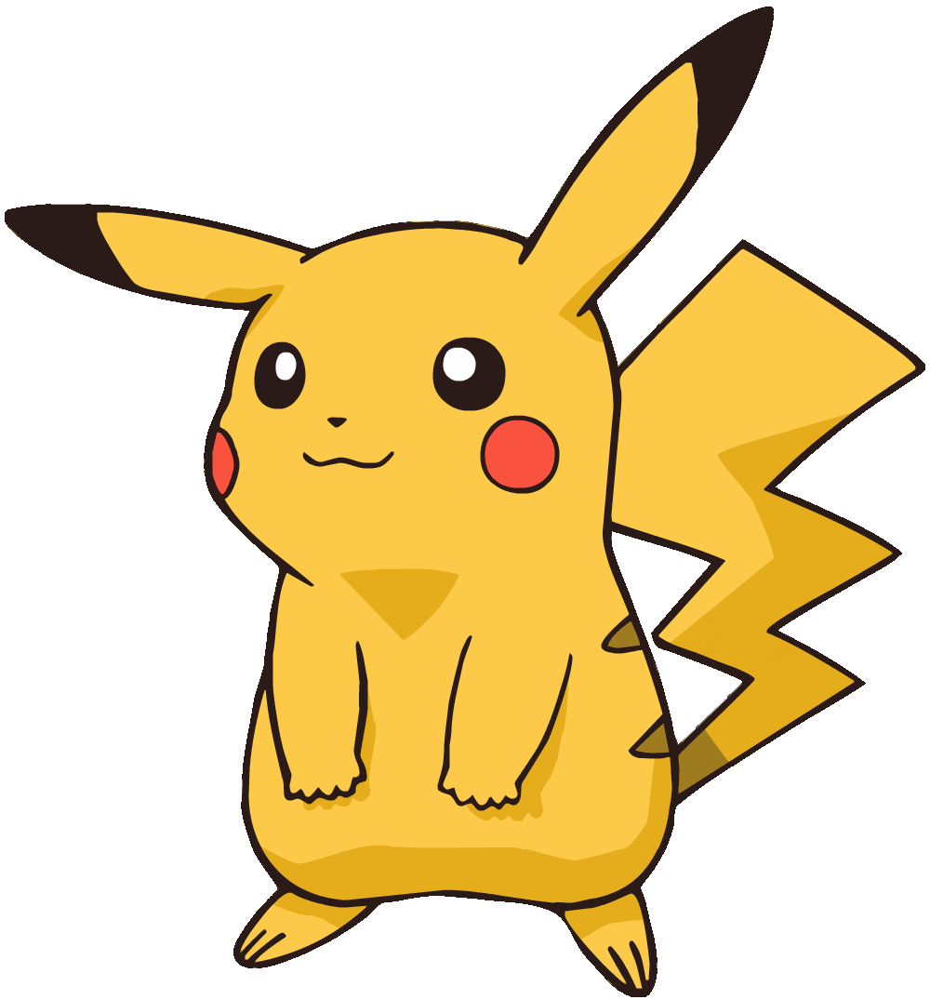
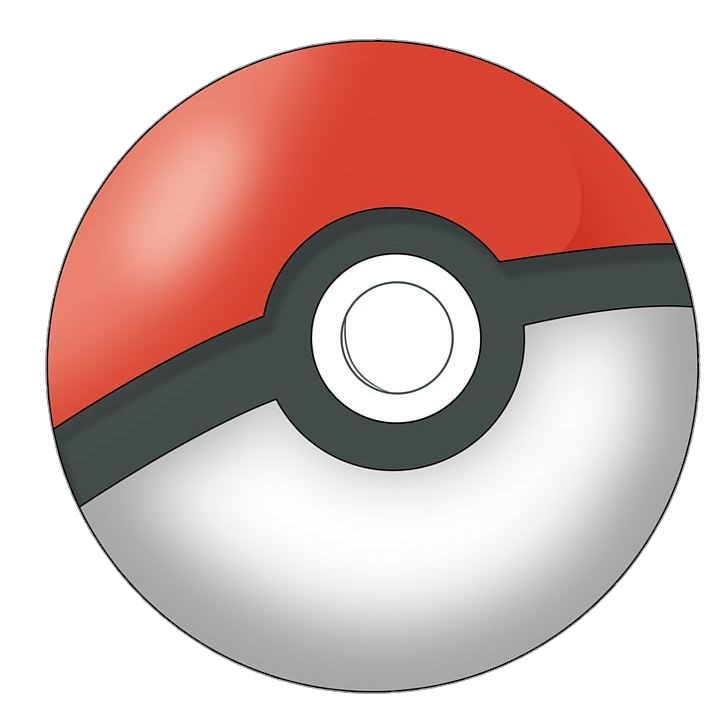

Pikachu is a small, mouse-like Electric-type Pokémon with bright yellow fur, black-tipped ears, red cheek pouches, and a lightning bolt-shaped tail. It stores electricity in special sacs located in its cheeks and releases powerful electric shocks when threatened or excited. Pikachu is quick, intelligent, and agile, making it well suited for both defense and survival in the wild.
Pikachu is commonly found in forests and woodlands, where it lives in groups and gathers berries for food. It communicates with other Pikachu using a variety of cries and tail movements. When several Pikachu gather together, the electricity they produce can sometimes create small lightning storms. Although generally friendly, Pikachu can become defensive and use electric attacks if it senses danger.
Pikachu is one of the best-known Pokémon because of its unique appearance, playful nature, and impressive electrical abilities. It is about 0.4 meters (1 foot 4 inches) tall and weighs around 6 kilograms (13.2 pounds). As it grows stronger, Pikachu can evolve into Raichu using a Thunder Stone. Its combination of intelligence, speed, and electric power makes Pikachu one of the most popular and admired Pokémon.

The Poké Ball is a spherical device used by Pokémon Trainers to catch and store Pokémon. It has a red top half, a white bottom half, and a black horizontal band with a button in the center. When a Trainer throws a Poké Ball at a wild Pokémon, it opens up and releases a beam of light that captures the Pokémon inside. Once captured, the Pokémon can be stored in the Poké Ball until the Trainer decides to release it for battle or other activities.
Poké Balls are an essential tool for Trainers, allowing them to carry multiple Pokémon with them on their journeys. They come in various types, each with unique properties and effectiveness in capturing different Pokémon. Some Poké Balls are designed for specific situations, such as the Great Ball, Ultra Ball, and Master Ball, which offer higher capture rates or special features. Trainers often choose their Poké Balls based on the Pokémon they are trying to catch and the conditions of the encounter.
In addition to their practical use, Poké Balls have become iconic symbols of the Pokémon franchise. They represent the bond between Trainers and their Pokémon, as well as the excitement of discovering and capturing new creatures. The design of the Poké Ball has remained largely unchanged since its introduction, and it continues to be a beloved and recognizable element of the Pokémon world.